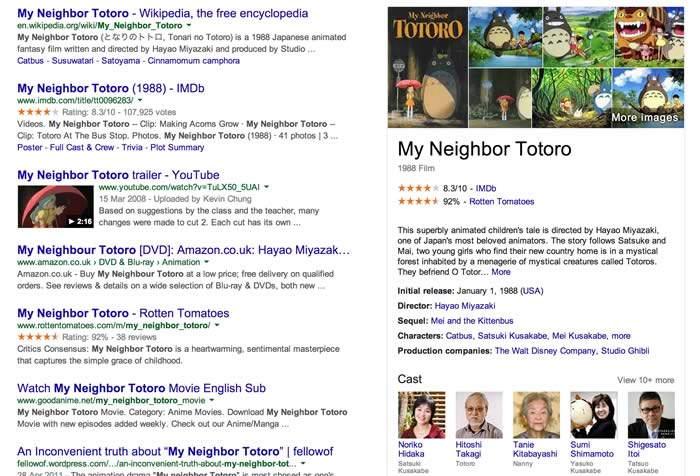

Cant see the html for the boxes
One of the things I am most passionate about is CSS Architecture, and our latest project is making a lot of use of the concepts in OOCSS (Object Orientated CSS) with a little bit of SMACSS (Scalable modular architecture in CSS) thrown in for good measure. It's been an amazing experience to work with these 2 ideologies and it has really helped to boost the quality of our code, but one area that has begin to suffer is our automated tests, more precisely the css selectors within our selenium tests.
The main idea behind concepts like OOCSS is to make your CSS more scalable, easier to maintain and easier to work with. OOCSS has 2 main principles:
Separate structure and skin
This means to define repeating visual features (like background and border styles) as separate “skins” that you can mix-and-match with your various objects to achieve a large amount of visual variety without much code. See the module object and its skins.
Separate container and content
Essentially, this means “rarely use location-dependent styles”. An object should look the same no matter where you put it.
So instead of styling a specific <h2> with .myObject h2 {...}, create and apply a class that describes the <h2>
in question, like <h2 class="category">.
So how does this cause us problems, first we need to go into how we normally target things using selenium:
Selenium
Let's start with a simple example, on our item pages we generally will have an area that contains seller information and call to actions.
Pre OOCSS often you would see markup like the following:
<section class="sellerprofile">
<h2>Paul Rudge</h2>
<a class="reply-button" href="...">
More about this seller
</a>
...
</section>
The selenium targeting to get all the elements in this area would then be the same as what we would be using in the css to style it, this direct relationship makes it very easy to write the tests:
.sellerprofile
.sellerprofile > h2
.sellerprofile > reply-button
When we start looking at this from an OOCSS prespective taking into account the design of the rest of the page we start to notice that there are a lot of reusable patterns that we can start making use of:
- The design of the seller profile box as a container is repeated a lot, we can create a new reusable style/component called .box
- The h2 style is always the same in every .box, but does not look the same as our default h2, so we create .box-title
- The button is the main button we use everywhere, so we create a new style/component .btn-primary
This changes the markup to look like this:
<section class="box">
<h2 class="box-title">Paul Rudge</h2>
<a class="btn-primary" href="...">
More about this seller
</a>
...
</section>
And here is where the problem emerges, all of a sudden the user profile box is marked up with reusable styles, which could appear
multiple times on the same page, simply targeting .box > .box-title really is not specific enough for our test to
be useful. The test would not be able to tell the difference between this and a completely different area of the site using the same
styles.
At this point we could resort to xpath or an xpath like css selector allowing us to very specifically pick the element we wanted:
//html/body/div[2]/div/div[2]/main/div[3]/section[1]/h2
The problem with this, apart from the fact it's difficult to read, is now our test is very tightly coupled with our html code, any small change to the structure, any variation in layout would cause the test to fail. Every little change to the code requires a high level of test maintenance, it becomes too much of an effort to keep tests passing and you stop writing new ones, stop maintaining older ones.
Really we want to be able to move components around a page quickly and easily, reorder how they appear and have a test that is clever enough to understand the changes like we would have got pre the days of box.
We could at this point decide the easiest solution would be to add something to the element to allow us to hook onto it. Why not just re-add the reply-panel class or an id? Harry Roberts suggested something very similar when discussing Adding the semantics back into OOCSS.
This involved adding data-ui-component="seller-profile" in place of where we used to have the seller profile class. We can
then use this to target the elements within this component.
<section class="box" data-ui-component="seller-profile">
<h2 class="box-title">Paul Rudge</h2>
<a class="btn-primary" href="...">
More about this seller
</a>
...
</section>
While this does solve the problem, and in some circumstances might be the best solution, it felt wrong in some ways to add markup with the sole purpose of being hooks for selenium tests.
This left us with a difficult challenge to solve, how to markup our code so that we can target it with tests without having to always revert to adding code specifically for the tests.
Our solution
So what kind of things do we need to do with our selenium tests, after looking through our existing tests we broke it down to the following 3 areas:
- Read some data on the page
- Page navigation and interactive elements
- Inputting data into forms
Looking at the first requirement we realised we needed a way to be more descriptive with our data. The first thing that came to mind was can micro data help in this situation and that led to the idea of using schema.org.
Schema.org
So what is Schema.org? It describes itself in the following way:
“This site provides a collection of schemas that webmasters can use to markup HTML pages in ways recognized by major search providers, and that can also be used for structured data interoperability (e.g. in JSON). Search engines including Bing, Google, Yahoo! and Yandex rely on this markup to improve the display of search results, making it easier for people to find the right Web pages.
Many sites are generated from structured data, which is often stored in databases. When this data is formatted into HTML, it becomes very difficult to recover the original structured data. Many applications, especially search engines, can benefit greatly from direct access to this structured data. On-page markup enables search engines to understand the information on web pages and provide richer search results in order to make it easier for users to find relevant information on the web. Markup can also enable new tools and applications that make use of the structure.”
It is essentially a way to markup your html that exposes the original data model that produced it.
This not only allows search engines to understand the data on your pages better but hopefully soon will do the same for screen readers.
This is why some results in google will have things like star ratings or how when searching for "my neighbour totoro" you get so much more information in the right hand side panel.

So what does our markup look like after applying schema:
<section class="box" itemscope itemtype="http://schema.org/Person">
<h2 class="box-title" itemprop="name">Paul Rudge</h2>
<a class="btn-primary" href="...">
More about this seller
</a>
...
</section>
And the tests:
[itemtype="http://schema.org/Person"]
[itemtype="http://schema.org/Person"] [itemprop="name"]
Your selector now actually starts to describe exactly what it is you are trying to do, the test becomes very readable and you are accessing the data in a way that should make the test far more stable. Any rearranging of this page should have no effect on the tests ability to check this component for the users name.
What about interaction, can schema.org help us with this? In the case of our example yes:
<section class="box" itemscope itemtype="http://schema.org/Person">
...
<a itemprop="url" class="btn-primary" href="...">
More about this seller
</a>
...
</section>
What about other links that could appear within a seller profile box, let's try a reply link.
<section class="box" itemscope itemtype="http://schema.org/Person">
...
<span itemprop="potentialAction" itemscope itemtype="http://schema.org/ReplyAction">
<a itemprop="url" class="btn-primary" href="...">
Reply
</a>
</span>
...
</section>
This example has some flaws, it either involves one very long line or involves adding an additional element to add the schema to. Now you may already have structure in place that allows for this but it's not necessarily going to be the case. When it comes to this level of targetting it might be worth looking at the value your getting from the schema itself in this location and if the test could be simplified by just using seleniums abilty to target items based on containing text.
[itemtype="http://schema.org/Person"] [itemtype="http://schema.org/ReplyAction"] [itemprop="url"]
or since you are already filtered:
[itemtype="http://schema.org/Person"] a[contains(text(),'Reply')]
Schema won't always be able to solve your problem, the things you want to interact with on the page, these could be items that are simply not data driven like main navigation or they could be things that are not currently covered by schema.org as it stands.
For the things that are not currently in schema.org there is an option, extending schema. Essentially you can add new item types and item properties simply by following the naming convention, and any that gain popularity could end up becoming part of the official spec.
We could for example extend the Person schema to have the new property twitterAccount
[itemtype="http://schema.org/Person"] [itemprop="twitterAccount"]
Or we could add a completely new item type where we want something inbetween a Person and an Organisation and create
PrivateSeller, which we can then use more oganisation style props on such as product.
[itemtype="http://schema.org/Person/PrivateSeller"] [itemprop="product"]
What about forms
Well it turns out the final problem is simple, we already do it, it's already part of the html spec. Our rules around forms is simply the following 2 rules:
- Unique name on all forms
- Unique name per form on all form elements
<form name="unique-form-name">
...
<input type="number" name="unique-input-name" />
...
</form>
Summary
So what benefits to we take away from this as a technique:
- You have made your tests more descriptive
- You have not added markup just for tests
- Tests should start breaking for test failures, not redesigns
- Tests are now affected by data and interaction rather than look and feel
- As it grows you get accessibility benefits for free
- Your SEO team are gonna love you
- You are gonna look great on Google search!
Though you do have the following downsides:
- You may be required to add more html to your markup
- Some of your html tags will start to get a little heavy
This is still a work in progress for us as a technique but is so far proving to be successful.
It would be great to hear feedback on this so we can continue to develop and judge this as a practice.